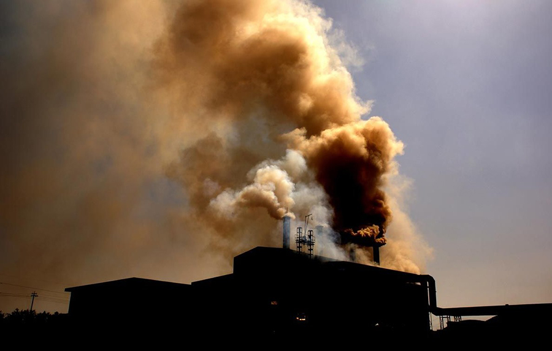

大气污染

主要来源于工厂废气排放、汽车尾气等。像在一些工业城市，空气中常常弥漫着大量的颗粒物（PM2.5和PM10）、二氧化硫、氮氧化物等有害气体。这些污染物会导致雾霾天气，影响空气质量，危害人体呼吸系统和心血管系统。
水污染
包括工业废水、生活污水以及农业面源污染。未经处理的污水直接排放到河流、湖泊中，会导致水体富营养化。例如，过多的氮、磷等营养物质使藻类大量繁殖，出现水华现象，破坏水生生态系统，还会影响饮用水源的安全。
土壤污染
工业废渣的随意堆放、农药化肥的过度使用等都会造成土壤污染。一些重金属（如汞、镉、铅等）进入土壤后，不仅影响土壤肥力，还会通过食物链在生物体内富集，最终危害人体健康。
了解更多环保知识，加入我们，一起行动！